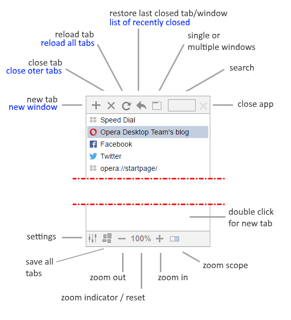
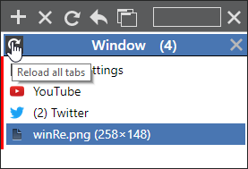
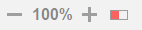
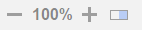
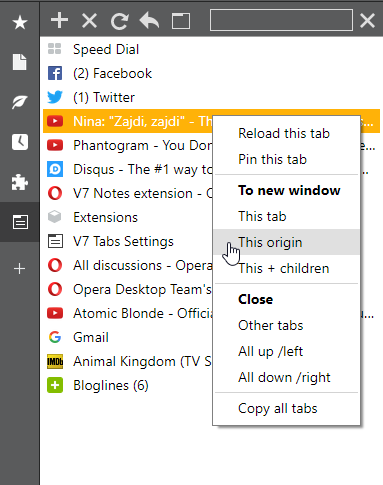

zoom
100%
v2.1// 21-08-2017
v2.0// 06-08-2017
v1.8// 04-13-2017
v1.7.5 // 04-11-2015
v1.7 // 02-11-2015
v1.4.5 // 27-08-2015
v1.4 // 27-08-2015
shortcuts
v1.3 // 17-06-2015
v1.2 // 11-06-2015
v1.1 // 08-05-2015
v0.99 // 17-04-2015
v0.98.2 // 15-04-2015
v0.98 // 15-04-2015
0.95 // 13-04-2015

right click actions are in blue color, and pretty much self explanatory
click restore last closed multiple times to restore tabs/windows in reverse order they were closed
reorder tabs by dragging them (green indicator)
drag out tab (single or multiple) out of sidebar and drop it anywhere to send that tab(s) into new window
if you drop tab on window selector, it will go on index 0 (first tab in that window)
click on window selector to open/close list of tabs in it, or click on x to close window
right click on window selector will bring that window on top (focus)
you can merge windows by dragging one window selector onto another
CTRL+click to select multiple tabs
click on window(s) button to switch between single or multiple windows
close app will close V7 Tabs, not the whole sidebar
double click empty space under tabs list to create new tab
you can reload all tabs in any window by clicking on window reload icon (or right-click reload button on top menu to reload current window tabs)

if you click Save all tabs, tabs will be saved in All Bookmarks as first folder
switch tabs by scrolling mouse wheel over tabs list (enable in settings), but only if there is no scroll bar. If there is a scroll bar, panel scrolling will take priority.
you can always switch tabs by scrolling mouse wheel over top and bottom menues
If you hold CTRL key while scrolling mouse wheel over panel, panel zoom will change (no need to open settings page)
list of recently closed tabs is limited to 25 last closed (API limitation). Benefit of using API instead of custom list is that in restored tab, you have ability to travel back in history and there is
no need to constantly listen when tab is closed (background is event page)
zoom commands are on the bottom and very simple
red/blue switch is for changing zoom scope
state of the switch is saved, and all zooming with this extension will act according to that state

red state is per-origin
if the switch is red, zoom behaves in classic way, all tabs from same origin/domain are affected and zoom is saved for next visit

blue state is per-tab
if the switch is blue, changing zoom (with extension) won't affect other tabs from same origin and zoom will NOT be saved for next visit, any navigation in that tab will cancel zoom made by per-tab scope... so it's only this-tab-this-time ...4t™ :P
to see/edit the list of saved zoom levels for domains, click the button below
right click tab for context menu

sometimes you need to reload tab that is not active, that's the first command for
to new window:
Copy all tabs will copy tabs to clipboar. You can paste it into address bar of any browser and load simple HTML page with the list of tabs that you copied. Useful if you need to move session with many tabs from one browser to another
other commands are self explanatory
pls report bugs under issues
Zoom lvl's
this tab will move clicked tab into new window (same as drag-out)
this origin will move all tabs with same origin/domain as clicked tab into new window
this + children will move clicked tab and all tabs opened from clicked tab into new window (for instance, all tabs opened from search results page)

Please consider donating.
You can donate with PayPal by clicking on image below. It will take you to unique PayPal page for all of my extensions.
Once there, enter any amount you like to donate, log into your PayPal account (if you not logged already) and confirm money transfer by clicking buy now button.
Or, if you prefer, you can donate using Pay for Goods or Services directly from your PayPal account to:
v7addons@gmail.com
Thank you.